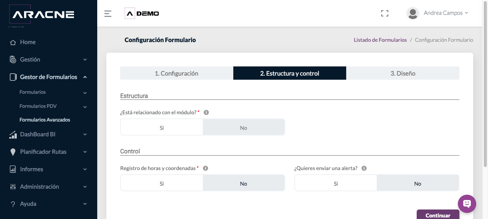
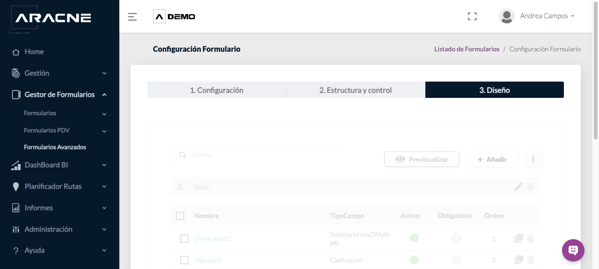
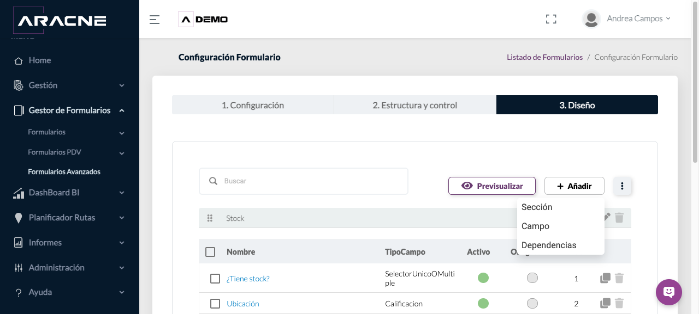
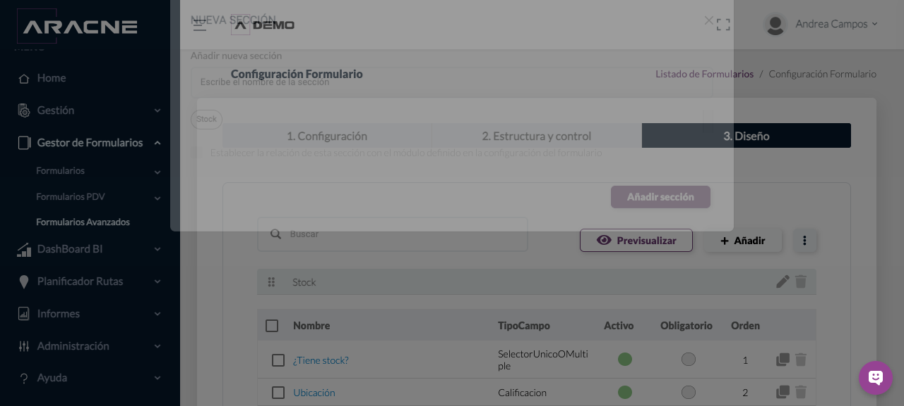
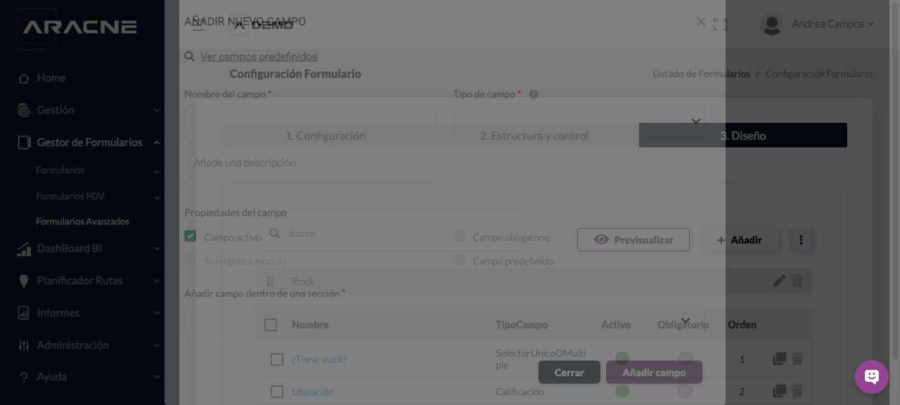
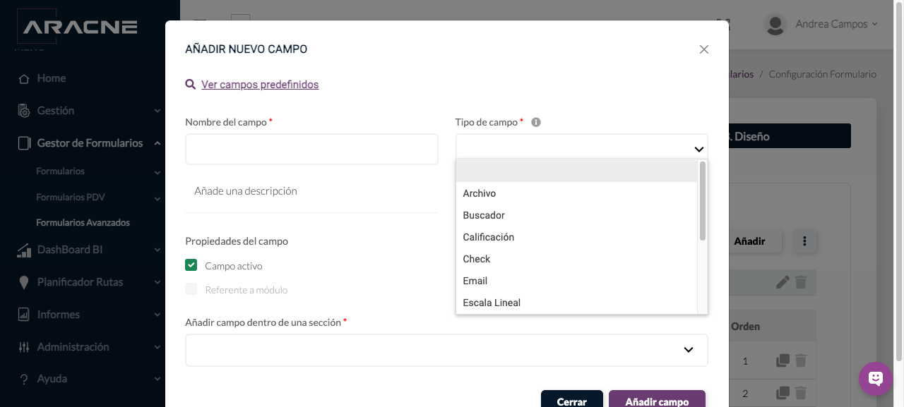
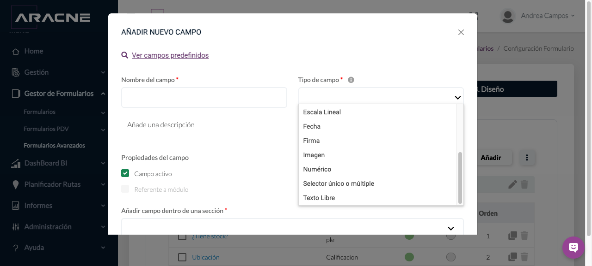
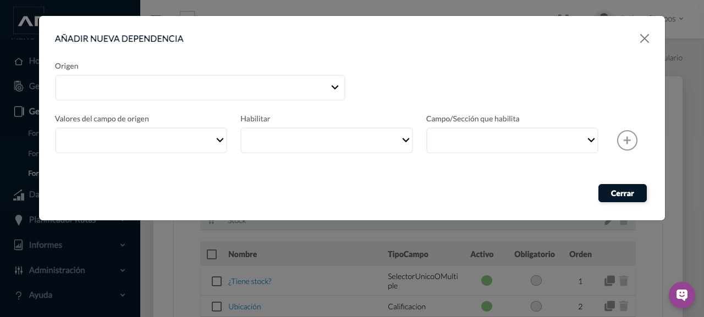
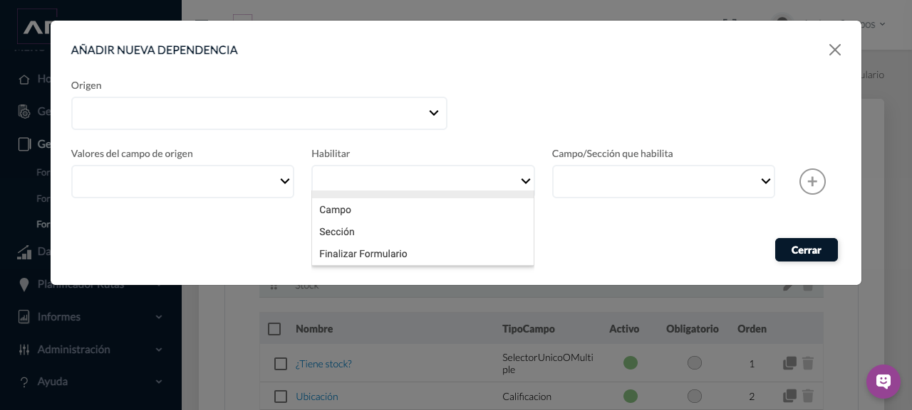

Back Office
Formularios Avanzados
Configurar formularios complejos, organizarlos en secciones, definir campos y dependencias, y asignarlos a establecimientos.
Requisitos
Roles, establecimientos y catálogos necesarios creados.
Dónde estáGestor de Formularios › Formularios Avanzados
Procedimiento
- Abre Nuevo formulario avanzado. En Configuración indica Nombre, Roles que verán el formulario, dónde se rellena, número de respuestas, obligatoriedad y estado.

Paso 1. Listado y acciones de Formularios Avanzados. 
Paso 1. Configuración y pestañas del editor de Formularios Avanzados. - Define si se registrarán horas y coordenadas, si habrá alertas y, cuando proceda, los destinatarios.
Paso 2. Configuración y pestañas del editor de Formularios Avanzados. - Continúa a Estructura y control. Añade secciones con un nombre claro y ordénalas según el trabajo de campo.
Paso 3. Configuración y pestañas del editor de Formularios Avanzados. - Añade campos dentro de cada sección. Indica Nombre del campo, Tipo de campo y descripción; activa solo las opciones necesarias.
Paso 4. Configuración y pestañas del editor de Formularios Avanzados. - Configura validación por longitud, rango numérico, escala u opciones cuando el tipo de campo lo permita. Marca Campo obligatorio cuando deba impedirse una respuesta incompleta.
Paso 5. Configuración y pestañas del editor de Formularios Avanzados. - Crea dependencias seleccionando Origen, Valores del campo de origen, Habilitar y Campo/Sección que habilita.
Paso 6. Configuración y pestañas del editor de Formularios Avanzados. - Revisa Diseño para confirmar orden, agrupación y comprensión.
Paso 7. Configuración y pestañas del editor de Formularios Avanzados. - Asigna el formulario a los establecimientos correspondientes desde la opción de asignación del formulario.
Paso 8. Listado y acciones de Formularios Avanzados. - Activa el formulario y comprueba su disponibilidad con un usuario del rol asignado.
Paso 9. Listado y acciones de Formularios Avanzados.
Diseñar secciones, campos y dependencias
- Completa primero 1. Configuración y 2. Estructura y control. Después, abre 3. Diseño.

Paso 1. Segundo paso del editor antes de entrar en Diseño. - En Diseño puedes buscar elementos, previsualizar el formulario y utilizar Añadir. El listado muestra las secciones y, para cada campo, su tipo, estado, obligatoriedad y orden.

Paso 2. Vista del tercer paso con una sección y sus campos. - Abre Añadir. El menú ofrece Sección, Campo y Dependencias.

Paso 3. Opciones disponibles para construir el formulario. - Para crear una sección, elige Sección, escribe su nombre y, si corresponde, establece su relación con el módulo definido en la configuración. Pulsa Añadir sección.

Paso 4. Campos y botón para incorporar una sección al formulario. - Para crear un campo, elige Campo. Introduce Nombre del campo, selecciona Tipo de campo, añade una descripción y elige la sección en la que se incluirá. También puedes mantenerlo activo, marcarlo como obligatorio cuando proceda o consultar campos predefinidos.

Paso 5. Configuración general de un campo dentro de una sección. - Selecciona el tipo apropiado. Están disponibles: Archivo, Buscador, Calificación, Check, Email, Escala Lineal, Fecha, Firma, Imagen, Numérico, Selector único o múltiple, Texto libre, Título, Ubicación y Vídeo.

Paso 6. Primera parte del selector de tipos de campo. 
Paso 6. Continuación del selector de tipos de campo. - Revisa el nombre, descripción, propiedades y sección de destino y pulsa Añadir campo. Comprueba después el tipo, estado, obligatoriedad y orden en la tabla de Diseño.
Paso 7. Botón Añadir campo después de configurar sus propiedades. - Para condicionar el recorrido, selecciona Dependencias. Elige el campo de Origen, los Valores del campo de origen, el efecto en Habilitar y el Campo/Sección que habilita. El botón circular con el signo más permite añadir la regla configurada.

Paso 8. Controles que relacionan un valor de origen con el elemento habilitado. - En Habilitar puedes seleccionar Campo, Sección o Finalizar Formulario. Revisa la combinación completa antes de añadirla.

Paso 9. Opciones Campo, Sección y Finalizar Formulario.
Duplicar o eliminar un formulario
- En el listado, utiliza el icono de duplicar de la fila para crear una copia del formulario o el icono de la papelera para ejecutar Eliminar.
Paso 1. Ejemplo de los controles disponibles durante la configuración. - El resultado de Eliminar depende de los reportes asociados: si el formulario no tiene reportes, se elimina; si tiene reportes, se desactiva para conservar la información vinculada. Comprueba después si desapareció del listado o quedó inactivo.
Paso 2. El estado Activo permite distinguir un formulario disponible de uno desactivado.
Campos y controles
- Roles que verán el formulario: perfiles que reciben el formulario.
- Dónde se rellena: contexto de cumplimentación.
- Número de respuestas por día/establecimiento: frecuencia admitida.
- Campo activo y obligatorio: disponibilidad y exigencia.
- Traer respuestas anteriores: recupera datos previos cuando se configura.
- Origen y valor: condición que dispara la dependencia.
- Habilitar y Campo/Sección que habilita: efecto de la condición.
- Asignación a establecimientos: limita dónde debe aparecer.
Resultado esperado
El formulario activo aparece para los roles y establecimientos asignados, con secciones, reglas y dependencias previstas.
Cómo comprobarlo
Usa un perfil de prueba del rol: abre el establecimiento, entra al formulario, recorre secciones, activa cada dependencia y confirma obligatoriedad y límites.
Problemas habituales
- Si no aparece, comprueba estado, rol y asignación al establecimiento.
- Si una dependencia no se activa, revisa el campo de origen y el valor exacto.
- Si un campo queda fuera de lugar, revisa su sección y el orden en Diseño.
- Si no permite finalizar, localiza los campos obligatorios sin respuesta.